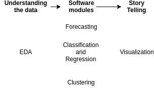
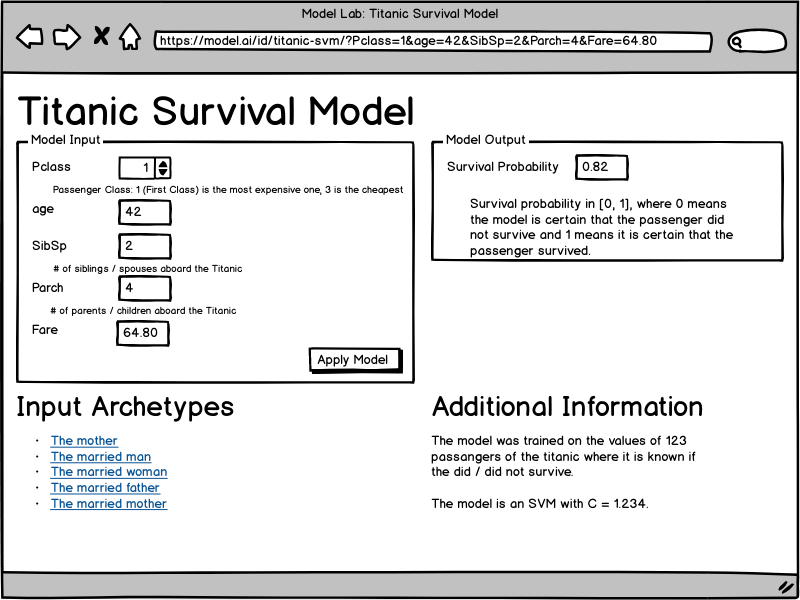

Data Science projects are either pure analytics projects, or software projects, or both.
Three typical data science project phases are understanding the data, creating a software component and then a storytelling part:
{kind=link}

There are two other steps which I left out as I don't have any rules to follow or tools that simplify the job: Getting access to the data and data cleaning.
Please also note that waterfall does not work: The project phases are likely not "pure", but slightly mixed. While you will have an exploratory phase in the beginning, you will also need to communicate your findings (storytelling).
In the following, I will highlight some of the tools to simplify the project phases and mention what you should do to make the project successful.
Understanding the Setting
Before there is data, you have a process which generates the data. You have a business with a history. Changes which needed to be done. Not the nice and clean way, but ASAP. Understanding howthe setting helps you to ask reasonable questions in the next step.
Understanding the Data
Exploratory Data Analysis happens when you
first get a dataset and already have it in a format you can work with. The
linked article already contains quite a bit of software, especially
Pandas, IPython notebooks and edapy
are useful at this step.
I would create a separate repository for this phase. This repository contains code and some artifacts like images or maybe small parts of the dataset and is unlike typical software repositories:
- No tests: What exactly would you test for? The only thing I could think of is boundary and distribution checks, e.g. defining that an "age" has to be non-negative and below 200 and should have its median between 20 and 40.
- No reviews: It is super hard to review IPython notebooks. Don't get me wrong - you should talk about your findings and you should give co-workers access to your code, but it does not make sense to expect them to fully go through your code. Code for understanding data is likely dirty, because most data is dirty.
It's hard to tell when this project phase is over. One artifact that should be created at the end of this project phase is a data loading script. It should take the data from your typical sources and return it in a format you can directly work with. This could be CSV to Pandas dataframes. The dataframe should be cleaned already. The data loading script will be pasted in the subsequent software project and should get a software review as it is a core part of the software development.
If you happen to be in a pure exploratory project - meaning somebody told you to have a look at the data and find interesting things - be aware that this is hard. Make sure that stakeholders understand that you need regular feedback to see if you are on the right track. I would say at least once a day. Pure EDA projects have a high potential to be unsatisfying for everybody.
Ask Stakeholders for Hypotheses. Hypothesis checking is a lot more "work as usual" where you can build up knowledge and finish the task.
Software Projects
For forecasting, classification and regression, you are dealing with supervised machine learning tasks. As it is machine learning, you have to have an optimization metric. In some cases, it will be possible to have the same optimization metric as what your stakeholders use to measure how well this part is doing. If this is possible, do it: Use the same metric!
Having the same metric to optimize likely leads to better results and gives your stakeholders an easier time understanding your results. It directly contributes to the "storytelling" aspect.
As with any software project, you should have tests, code reviews, a proper project structure and get deployed / used somewhere.
The main difference to typical software projects is the model you create. That model is perceived as a black box by stakeholders. In the worst case, they think YOU don't know what the model is doing! I recommend reading The Mythos of Model Interpretability to get some nice conceptual ideas about black boxes. To summarize:
- Data Scientists understand their models to a large degree: We design and train them, so we know the architecture, the data and the training procedure. However, for complex models like deep neural networks we cannot fully explain individual predictions - which is exactly the black box problem.
- Black Boxes are common: If we define a black box as something where we don't know 100% instantly and intuitively what happens, then there are a lot of black boxes. Humans, for example. But still you trust your doctor.
- Error types are important: For a human doctor, you know in which way they might make errors. They might be tired or distracted, but most likely they will just not pay enough attention and thus diagnose something common where you might have an issue which is uncommon. For machine learning models, it can be the other way around. While overfitting is a problem we are aware of, the model can be fooled into making a very unusual prediction.
So there are two sides of this problem: On the one hand, it is hard to make sure that a model is trustworthy. You have to have the right metric(s), you have to make sure the software works as expected. On the other hand, if you have a trustworthy model, you have to convince your stakeholders that it is trustworthy.
Building Trust
For this part, you have to talk a lot with your stakeholders. They have to get a basic understanding of how your model works. It is especially important to emphasize that a model is not a rule-based system. At least not necessarily. Decisions can be made in a non-linear way which makes questions such as "what is the most important feature" problematic.
Model Lab
You can build trust by giving access to your model. If you can give your stakeholders an easy to use interface in which they can enter / manipulate features and see the output of a model, they will either build more trust in your model or you will get some examples where your model fails. Either way, it is a win for the project.
{kind=link}

This wireframe is an idea for a web service which allows data scientists to share models with stakeholders in a way that they can "poke" it. They see what the input of the model is, they can manipulate the input and see the output. Please also note that the URL contains the model's parameters and thus can be shared.
How can such a web service look from a software perspective?
Each model consists of a package with a model.py which contains an
infer(input_dict) function and a description.json:
{
"name": "Titanic Survival Model",
"parameters": [
{
"name": "Pclass",
"label": "Pclass",
"type": "int",
"comment": "Passenger Class: 1 (First Class) is the most expensive one, 3 is the cheapest"
},
{
"name": "age",
"label": "age",
"type": "float",
"comment": ""
},
{
"name": "SibSp",
"label": "SibSp",
"type": "float",
"comment": "# of siblings / spouses aboard the Titanic"
},
{
"name": "Parch",
"label": "Parch",
"type": "float",
"comment": "# of parents / children aboard the Titanic"
},
{
"name": "Fare",
"label": "Fare",
"type": "float",
"comment": ""
}
],
"output": [
{
"name": "Survival Probability",
"comment": "Survival probability in [0, 1], where 0 means the model is certain that the passenger did not survive and 1 means it is certain that the passenger survived."
}
],
"archetypes": [
{
"name": "The mother",
"parameters": {
"Pclass": 1,
"age": 42,
"SibSp": 12.34,
"Parch": 3.141,
"Fare": 2.141
}
}
],
"info": {
"text": "The model was trained on the values of 123 passengers of the Titanic where it is known whether they did / did not survive.\n\nThe model is an SVM with C = 1.234."
}
}
Types that should be supported:
intfloatimagebinary(any file upload)ext:FOO(files with the extension FOO)
Storytelling
Storytelling is the part where you, as a data scientist, make your insights accessible, easy to understand and interpret in the correct way by your stakeholders. It can be about visualizations, but also about choosing the right metrics and reasonable numbers to share. I think I'll make another blog post about this topic as Python has many visualization packages.